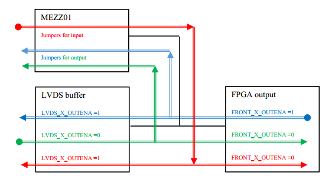

程序说明¶
PixieNetCommon.c
PixieNetCommon.h
PixieNetConfig.cpp
PixieNetConfig.h
PixieNetDefs.h
makefile
cgistats.c
clockprog.c
monitordaq.c
progfippi.c
runstats.c
writeI2C.c
d3.v3.min.js
defaults.ini
settings.ini
Xia_LLC_web_header.jpg
dygraph-combined.js
index.html
plotly-latest.min.js
rspage.html
webopspasswords 存放网页密码
xillydemo¶
DB
// The configuration of the FrontIO_A/B/C is completely flexible. For example, if you connect the RJ-45 of a Pixie-16 to FrontI/O A 0-3 (the upper RJ-45 on the trigger board), signals will connect
// FO5 - Front I/O A 3 FrontIO_Aena==0
// FO1 - Front I/O A 0 FrontIO_Aena==0
// FI5 - Front I/O A 1 FrontIO_Aena==1
// FI1 - Front I/O A 2 FrontIO_Aena==1
// F0 5p/5n synchronization status / multiplicity result channel 0(pku firmware)
// FO 1p/1n not used / multiplicity result channel 1(pku firmware)
// FI 5p/5n external fast trigger
// FI 1p/1n external validation trigger
// FrontIO_Aout [3] [0] [7] [4] [11] [8] [15] [12]
// FrontIO_Ain [1] [2] [5] [6] [9] [10] [13] [14]
FRONT_X_OUTENA
== 1 表示从 MZ 往前面板驱动输出，代码里面操作out
== 0 表示从前面板往 MZ 驱动输入，代码里面操作in
LVDS_X_OUTTENA
== 1 表示驱动网口向外输出
== 0 表示驱动网口向里输入
如果MEZZ01开启输入模式，则必须设置
FRONT_X_OUTENA==0 && LVDS_X_OUTTENA==1，其余模式下，MEZZ01跳针全部设置成输出模式，此时网口可用于输入或者输出模式。
当前，在前面板 C 口配置 一个 MEZZ01 模块，其中前四通道设置为信号输入，分别连接[1]/[2]/[5]/[6]，后四个通道设置为信号输出，分别连接[9]/[10]/[13]/[14]。 该配置模式下，C口对应的四个网口仍然可用于多重性的输出，此时参数 FrontIO = 0x6600, LVDSIO = 0x6666。如果不使用 MEZZ01 模块，只连接网口与P16模块，则参数 FrontIO/LVDSIO 均设置为 0x6666。